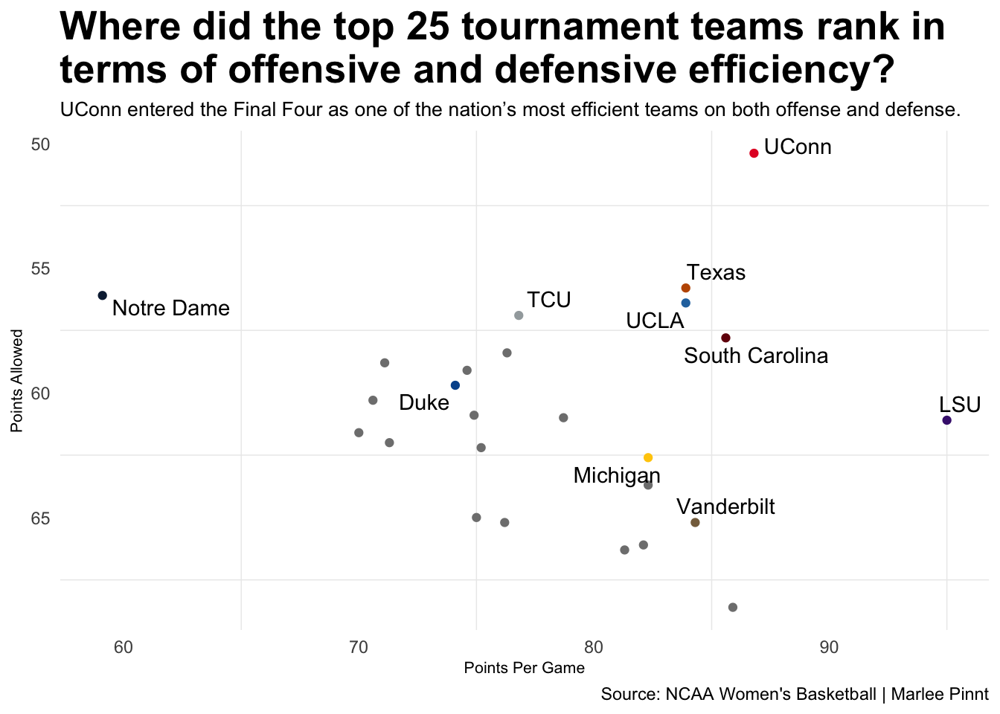
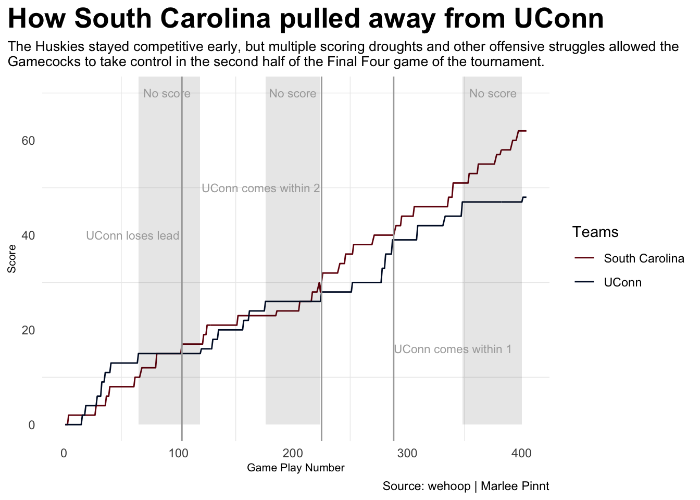

UConn Women’s Basketball has been a known powerhouse for years, but the 2026 NCAA Tournament did not end the way the Huskies had hoped. They entered the tournament with high expectations after winning the national championship the previous season and were highly favored to repeat as champions this year.
This season’s team was dominant from the beginning. The Huskies went undefeated in the regular season, swept through the Big East tournament, and entered the NCAA Tournament with a 38-0 record as the No. 1 overall seed. According to ESPN’s Tournament Predictor, UConn was 45.74% favored to win the title, far ahead of other top contenders like UCLA (13.04%) and South Carolina (12.45%).
The Huskies backed up these odds early in the tournament, winning each of their first four games by at least 18 points: Round of 64: UTSA (W 90-52) Round of 32: Syracuse (W 98-45) Sweet 16: UNC (W 63-42) Elite Eight Notre Dame (W 70-52)
Code
library(tidyverse)library(wehoop)library(ggrepel)library(gt)wbb_data <-read_csv("WBB Tournament Stats.csv")top10 <- wbb_data |>filter( Rank <11 )ggplot() +geom_point(data=wbb_data, aes(x=`Points Per Game`, y=`Points Allowed`, color=Team)) +geom_text_repel(data=top10, aes(x=`Points Per Game`, y=`Points Allowed`, label=Team)) +scale_y_reverse() +scale_color_manual(values =c("UCLA"="#2774AE", "South Carolina"="#73000a", "UConn"="#E4002B", "Texas"="#BF5700", "Duke"="#00539B", "TCU"="#A3A9AC", "Michigan"="#FFCB05", "LSU"="#461D7C", "Notre Dame"="#0C2340", "Vanderbilt"="#866D4B")) +labs(title ="Where did the top 25 tournament teams rank in \nterms of offensive and defensive efficiency?",subtitle ="UConn entered the Final Four as one of the nation’s most efficient teams on both offense and defense.",x ="Points Per Game",y ="Points Allowed",caption="Source: NCAA Women's Basketball | Marlee Pinnt" ) +theme_minimal() +theme(plot.title =element_text(size =20, face ="bold"),axis.title =element_text(size =8), plot.subtitle =element_text(size=10), legend.position ="None",panel.grid.major =element_blank(), )

Despite their dominance, the Huskies’ goal of back-to-back titles ended in the National Semifinal with a 62-48 loss to South Carolina. The Gamecocks entered the match looking for revenge after losing to UConn in the 2025 National Championship game by 23 points. This time, South Carolina ended UConn’s record-breaking season and their 54-game win streak.
The game exposed weaknesses for UConn that had not appeared often during the season. In a game of physical defense, UConn struggled to find any offensive efficiency. The Huskies played their worst game of the season and their lowest-scoring performance in four seasons.
How UConn’s Final Four stats differed from its regular-season
The Huskies' overall performance decreased dramatically in their loss to the Gamecocks.
Statistic
Regular
FinalGame
Points
87.87
48.00
Rebounds
37.71
32.00
Assists
23.42
15.00
Turnovers
12.66
10.00
Steals
15.71
10.00
Blocks
4.97
3.00
Field Goal %
52.16
31.00
Field Goal Attempts
66.11
61.00
3-Point %
39.42
29.00
Free Throw %
76.11
67.00
By: Marlee Pinnt | Source: wehoop
Code
sc_box <-load_wbb_team_box(seasons =2026) |>filter(team_display_name =="South Carolina Gamecocks") |>mutate(game_date =as.Date(game_date))regular_season <- sc_box |>filter(game_date <as.Date("2026-04-03")) |>mutate(Season ="Regular")final_game <- sc_box |>filter(game_date ==as.Date("2026-04-03")) |>mutate(Season ="Final")full_season <-bind_rows(regular_season, final_game)final_long <- final_game |>group_by(Season) |>summarise(Avg_Points =mean(team_score),Avg_Rebounds =mean(total_rebounds),Avg_Assists =mean(assists),Avg_Turnovers =mean(turnovers),Avg_Steals =mean(steals),Avg_Blocks =mean(blocks),Avg_FGPCT =mean(field_goal_pct),Avg_FGATT =mean(field_goals_attempted),Avg_3PTPCT =mean(three_point_field_goal_pct),Avg_FTPCT =mean(free_throw_pct), ) |>pivot_longer(cols=starts_with("Avg"),names_to="Stat",values_to="FinalGame" ) |>select(Stat, FinalGame)regular_long <- regular_season |>group_by(Season) |>summarise(Avg_Points =mean(team_score),Avg_Rebounds =mean(total_rebounds),Avg_Assists =mean(assists),Avg_Turnovers =mean(turnovers),Avg_Steals =mean(steals),Avg_Blocks =mean(blocks),Avg_FGPCT =mean(field_goal_pct),Avg_FGATT =mean(field_goals_attempted),Avg_3PTPCT =mean(three_point_field_goal_pct),Avg_FTPCT =mean(free_throw_pct), ) |>pivot_longer(cols=starts_with("Avg"),names_to="Stat",values_to="Regular" ) |>select(Stat, Regular)table <-bind_cols(regular_long, final_long) |>select(-Stat...3) |>rename(Statistic=1)table |>mutate(Statistic =case_when( Statistic =="Avg_Points"~"Points", Statistic =="Avg_Rebounds"~"Rebounds", Statistic =="Avg_Assists"~"Assists", Statistic =="Avg_Turnovers"~"Turnovers", Statistic =="Avg_Steals"~"Steals", Statistic =="Avg_Blocks"~"Blocks", Statistic =="Avg_FGPCT"~"Field Goal %", Statistic =="Avg_FGATT"~"Field Goal Attempts", Statistic =="Avg_3PTPCT"~"3-Point %", Statistic =="Avg_FTPCT"~"Free Throw %",TRUE~ Statistic ) ) |>gt() |>tab_header(title ="Where South Carolina elevated its level of play in the postseason",subtitle ="The Gamecocks improved in key areas during the tournament, pushing their run to another national championship appearance. Certain stats were worse in the tournament but didn't affect the outcome." ) |>tab_style(style =cell_text(color ="black", weight ="bold", align ="left"),locations =cells_title("title") ) |>tab_style(style =cell_text(color ="black", align ="left"),locations =cells_title("subtitle") ) |>tab_source_note(source_note =md("**By:** Marlee Pinnt | **Source:** wehoop") ) |>tab_style(locations =cells_column_labels(columns =everything()),style =list(cell_borders(sides ="bottom", weight =px(3)),cell_text(weight ="bold", size=12) ) ) |>opt_row_striping() |>opt_table_lines("none") |>fmt_number(columns =c(Regular, FinalGame),decimals =2 ) |>tab_style(style =list(cell_fill(color ="#73000a"),cell_text(color ="white") ),locations =cells_body(rows =Statistic =="Points"| Statistic =="Field Goal %"| Statistic =="Free Throw %") )
Where South Carolina elevated its level of play in the postseason
The Gamecocks improved in key areas during the tournament, pushing their run to another national championship appearance. Certain stats were worse in the tournament but didn't affect the outcome.
Statistic
Regular
FinalGame
Points
87.11
62.00
Rebounds
42.47
47.00
Assists
18.39
12.00
Turnovers
12.76
15.00
Steals
9.63
9.00
Blocks
5.89
2.00
Field Goal %
50.92
38.00
Field Goal Attempts
65.29
56.00
3-Point %
38.68
33.00
Free Throw %
72.89
82.00
By: Marlee Pinnt | Source: wehoop
UConn is known for its efficient ball movement and strong shooting, but in this game, they couldn’t find a rhythm. The Huskies shot only 31% from the field and scored, compared to their season average of 52%, and scored their fewest points in an NCAA tournament game since 2022. They also suffered major scoring droughts: a 4:38-minute drought between the first and second quarter, a nearly three-minute drought in the second half, and a final field goal scored with 4:39 remaining. One of UConn’s star players, senior Azzi Fudd, finished with only eight points, well below her average of 17.3 points per game.
South Carolina is nowhere short in terms of talent. Although they would eventually lose to UCLA (79-51) in the title game, they have now reached the Final Four in six consecutive seasons and two championships in the past five seasons (2022 and 2024).
Code
pbp_data <-read_csv("uconnVscar.csv")ggplot() +geom_line(data=pbp_data, aes(x=game_play_number, y=away_score, group=away_team_name, color=away_team_name) ) +geom_line(data=pbp_data, aes(x=game_play_number, y=home_score, group=home_team_name, color=home_team_name) ) +annotate("rect", fill ="black", alpha =0.1, xmin =65, xmax =119,ymin =0, ymax =Inf) +annotate("rect", fill ="black", alpha =0.1, xmin =176, xmax =224,ymin =0, ymax =Inf) +annotate("rect", fill ="black", alpha =0.1, xmin =348, xmax =400,ymin =0, ymax =Inf) +geom_vline(xintercept =103, color="darkgrey") +geom_text(aes(x=60, y=40, label="UConn loses lead"), color="darkgrey", size=3) +geom_vline(xintercept =225, color="darkgrey") +geom_text(aes(x=172, y=50, label="UConn comes within 2"), color="darkgrey", size=3) +geom_vline(xintercept =288, color="darkgrey") +geom_text(aes(x=340, y=16, label="UConn comes within 1"), color="darkgrey", size=3) +geom_text(aes(x=90, y=70, label="No score"), color="darkgrey", size=3) +geom_text(aes(x=200, y=70, label="No score"), color="darkgrey", size=3) +geom_text(aes(x=375, y=70, label="No score"), color="darkgrey", size=3) +scale_color_manual(name ="Teams", values=c("#73000a","#000E2F")) +labs(title ="How South Carolina pulled away from UConn",subtitle ="The Huskies stayed competitive early, but multiple scoring droughts and other offensive struggles allowed the \nGamecocks to take control in the second half of the Final Four game of the tournament.",x ="Game Play Number",y ="Score",caption="Source: wehoop | Marlee Pinnt" ) +theme_minimal() +theme(plot.title =element_text(size =20, face ="bold"),axis.title =element_text(size =8), plot.subtitle =element_text(size=10), panel.grid.major =element_blank(),plot.title.position ="plot" )

UConn did not face any of the other Final Four teams during the 2025-26 regular season. This is leading many to wonder if their dominance in the Big East left them unprepared for the tournament’s physicality, whereas UCLA, Texas, and South Carolina had multiple regular-season matchups against each other.
While the Huskies fell short of a 12th title, the 2025-26 season squad made history with the program’s 11th undefeated regular season, once again setting the standard for UConn Women’s Basketball.